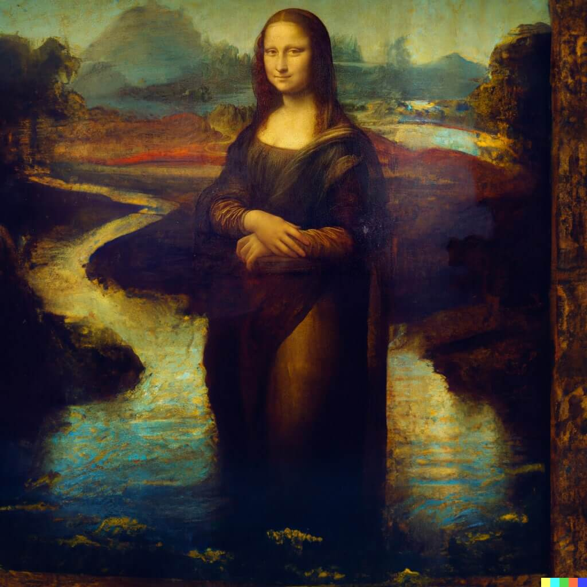
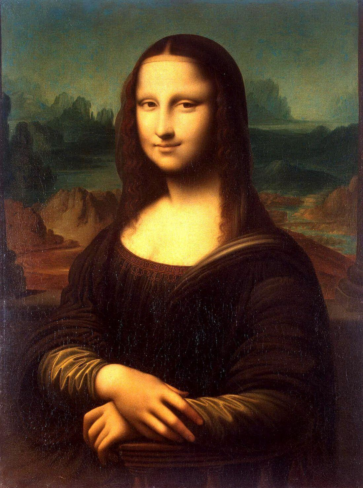
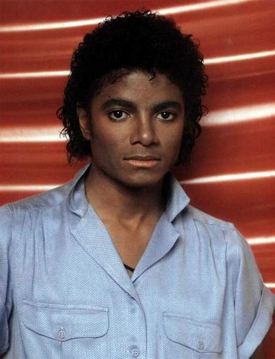
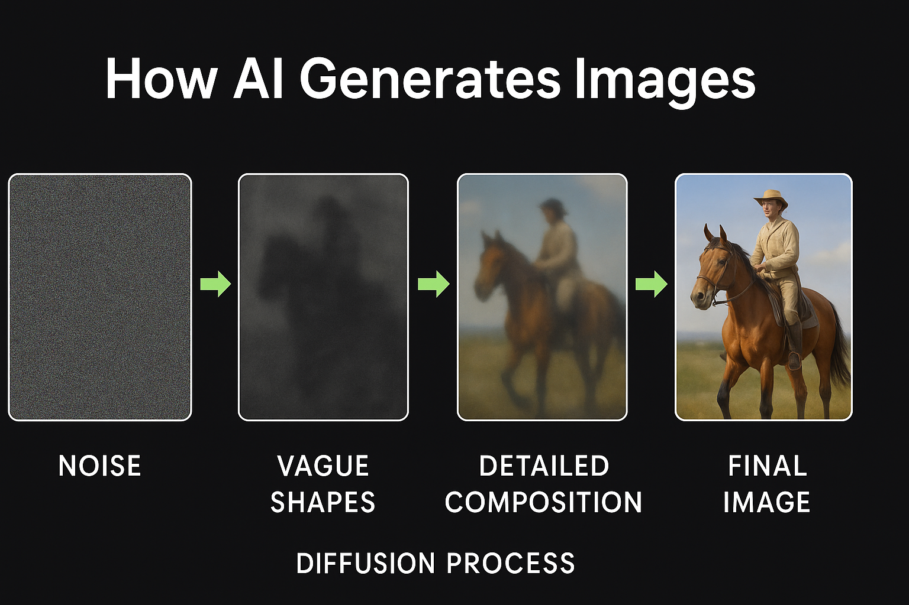

A site that shows how easily AI-generated images can fool us — and, more importantly, how to
expose them with simple verification techniques and a sharper eye.
Gallery
Hover to reveal the original image.
Donald Trump as the Pope
Hint: hover to see the original
Obama on the One-Dollar Bill
Hint: lettering and seals often give it away
Mona Lisa Standing


Hint: hands, clothing edges and shadow are weak spots
Michael Jackson Aged

Hint: plastic-looking skin and odd eyes = suspicious
Putin in Jail?
Hint: bars, chains and shadows often ‘bug out’
Pentagon Explosion (AI Hoax)
Hint: always confirm with official/news sources
Cybersecurity Risks
AI-generated images can deceive, steal information, or build false narratives. Common uses:
Phishing impersonating executives/brands
Fake emails that imitate companies or important people to steal passwords or money.
Fake profiles for social engineering
Social media accounts created to deceive, manipulate, or even trick people in scams.
Fabricated “evidence” for scams and defamation
Fake images used to destroy someone’s reputation or spread false news.
Artificial Intelligence can create photorealistic images using models like:
GANs — two networks competing to improve realism
Diffusion models — start from noise and refine into detail

The result can look real, but small artifacts often reveal it to a trained eye.
Quiz: Real or Fake?
Try to guess which ones were made by AI.
Final Message
See how easy it is to get fooled — trust more than what you see. All images you just saw were generated or modified by AI. Stay alert, question what you see, and verify the source.
Ethics & Rights
Educational purpose: digital literacy and cyber hygiene.
Generated/modified content: fake images here were created for controlled demonstration.
Context matters: avoid sharing images out of context; always check the source.